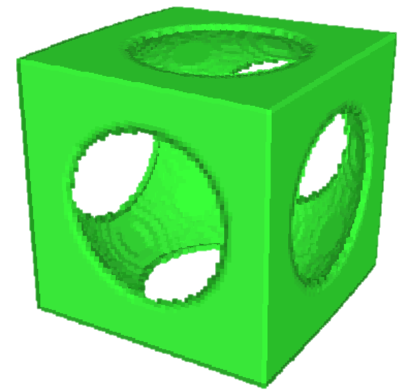

|  | Lewcid.com | #games |
#11/10/2020 |
#lc/win32/ |
(by Lewey Geselowitz) |
A collection of 16 classic Lewcid applications for the Windows platform (and an extra 4 for Tablet/Ink enabled devices).
These have been tested on Windows 10, but also worked as far back as Windows XP and 98. Enjoy!
-Lewey Geselowitz
Download
|
| Name | ||
| Shuzzle | game | 3D Shadow Puzzle Piece game |
| Freed Go | game | 3D game of Go (mobius strip) |
| Freed Invasion | game | 3D color matching game |
| Evil Dice | game | Timed puzzle strategy game |
| Thinking Game 2 (TG2) | game | Connect-4 in 3D |
| Towers of Hanoi | game | Classic logic puzzle |
| VSaber | game/utility | Carve and draw in 3D voxels |
| ImpView | game/utility | Voxelize and carve 3d equations |
| Grapher | utility | 2D/3D expression graphing |
| Alarm Clock | utility | T-rex reminds you to wake up |
| Crystal Math | utility | Scientific calculator, with calculus |
| Teach | utility | Learn to program linked lists and binary-trees |
| WirEd and ModEd | utility | Edit 3D wireframe and models |
| Low Ink Pictionary | ink/game | Draw hints for friends, ink runs out |
| Ink AniEd | ink/utility | Animate your drawings |
| Lazy Ink | ink/utility | Ink drawings that hang loose |
| Magic Ink | ink/utility | Draw ink as Magic-Eye 3D |